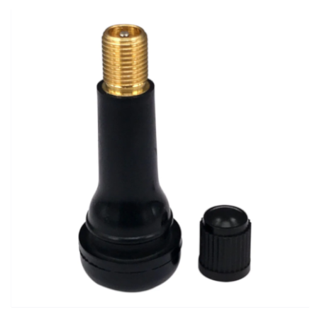
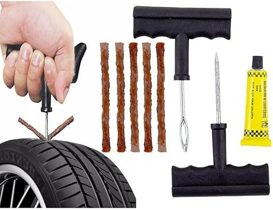
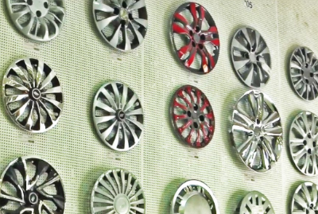

Proteção e Estética
Tampa Pneu Brilha
Se destacam por sua aparência brilhante e acabamento metálico ou cromado. Elas ajudam a proteger os pneus de sujeira, detritos e danos causados pelo sol, além de dar um visual mais sofisticado ao veículo. Esses produtos são fáceis de instalar e estão disponíveis em diferentes tamanhos e modelos para se adequar a vários tipos de veículos.
As válvulas para pneus são componentes essenciais que controlam a pressão de ar dentro dos pneus, permitindo o enchimento e a manutenção da pressão adequada. Elas são geralmente feitas de metal ou borracha e possuem um pino interno que pode ser pressionado para liberar ou bloquear o fluxo de ar. Existem diferentes tipos de válvulas, sendo as mais comuns a válvula Schrader (utilizada em veículos) e a válvula Presta (mais comum em bicicletas). Elas garantem a segurança e o desempenho dos pneus, evitando vazamentos de ar e contribuindo para a estabilidade do veículo.

Produtos de Correção
Kit Reparo para Pneu
O kit reparo para pneu é um conjunto de ferramentas e materiais projetados para corrigir furos e vazamentos temporários em pneus, permitindo que o motorista continue a viagem até que seja possível realizar o reparo definitivo. Normalmente, o kit inclui selantes, cordas de reparo, agulhas, alavancas e cola. Ele é especialmente útil em emergências, proporcionando uma solução rápida e prática, sem a necessidade de trocar o pneu imediatamente. Esses kits são compactos, fáceis de usar e muito populares entre motoristas para situações imprevistas.

Limpeza e durabilidade
Calotas
As calotas para rodas são peças de cobertura instaladas sobre as rodas dos veículos, com a função de proteger as partes internas, como os cubos de roda, e melhorar a estética do veículo. Elas são feitas de materiais como plástico, aço ou alumínio, e estão disponíveis em diversos modelos, tamanhos e designs, permitindo personalizar o visual do carro. Além de conferirem um aspecto mais sofisticado, as calotas também ajudam a proteger contra sujeira, corrosão e danos nas rodas, prolongando sua durabilidade.
